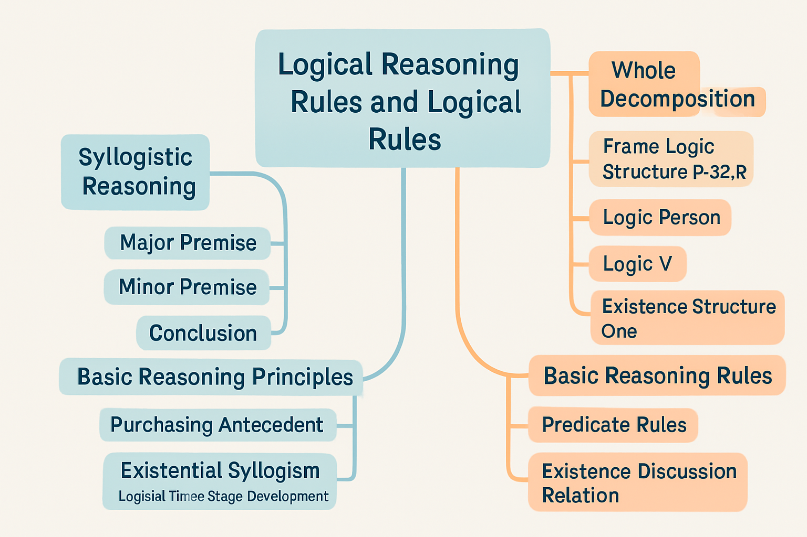

Course Objectives
- Understand the characteristics and applications of deductive reasoning
- Analyze the structure and validity of syllogisms
- Use basic logical symbols to express propositions and arguments
- Apply basic rules of inference for valid reasoning
- Use Venn diagrams to analyze the validity of syllogisms
Deductive Reasoning Basics
Deductive reasoning is the process of reasoning from general principles to specific instances.
Characteristics:
- From general to specific
- Necessity: If the premises are true, the conclusion must be true
- Certainty: High certainty of conclusion
- No new information: The information in the conclusion is already implicit in the premises
Example of Deductive Reasoning
All mammals have hearts. (General principle)
All dogs are mammals. (General principle)
Therefore, all dogs have hearts. (Specific instance)
Structure of Syllogisms
- Major premise: A proposition containing the major term and the middle term
- Minor premise: A proposition containing the minor term and the middle term
- Conclusion: A proposition containing the minor term and the major term
Where:
- Major term: The term that serves as the predicate in the conclusion
- Middle term: The term that appears in both premises but not in the conclusion
- Minor term: The term that serves as the subject in the conclusion
Example of a Syllogism
All humans are mortal. (Major premise: middle term "human" and major term "mortal")
Socrates is human. (Minor premise: minor term "Socrates" and middle term "human")
Therefore, Socrates is mortal. (Conclusion: minor term "Socrates" and major term "mortal")
In this example:
- Major term is "mortal"
- Middle term is "human"
- Minor term is "Socrates"
Validity of Syllogisms
The validity of a syllogism depends on its form, not its content.
Some basic rules for the validity of syllogisms:
- The middle term must be distributed in at least one premise
- If a term is distributed in the conclusion, it must be distributed in the corresponding premise
- At least one premise must be affirmative
- If one premise is negative, the conclusion must be negative
- Two negative premises cannot yield a valid conclusion
Basic Logical Symbols
Propositional logic symbols:
- ∧: Conjunction, represents "and"
- ∨: Disjunction, represents "or"
- ¬: Negation, represents "not"
- →: Conditional, represents "if...then..."
- ↔: Biconditional, represents "if and only if"
Predicate Logic Symbols
Predicate logic symbols:
- ∀: Universal quantifier, represents "for all..."
- ∃: Existential quantifier, represents "there exists..."
- P(x): Predicate, represents "x has property P"
Expressing Propositions with Logical Symbols
"All humans are mortal" can be represented as:
∀x(H(x) → M(x))
where H(x) means "x is human" and M(x) means "x is mortal".
"Some students like mathematics" can be represented as:
∃x(S(x) ∧ L(x, m))
where S(x) means "x is a student" and L(x, m) means "x likes mathematics".
Modus Ponens
If p → q is true, and p is true, then q is true.
If it rains, then the ground will be wet. (p → q)
It is raining. (p)
Therefore, the ground is wet. (q)
Modus Tollens
If p → q is true, and q is false, then p is false.
If it rains, then the ground will be wet. (p → q)
The ground is not wet. (¬q)
Therefore, it is not raining. (¬p)
Hypothetical Syllogism
If p → q is true, and q → r is true, then p → r is true.
If it rains, then the ground will be wet. (p → q)
If the ground is wet, then shoes will get dirty. (q → r)
Therefore, if it rains, then shoes will get dirty. (p → r)
Disjunctive Syllogism
If p ∨ q is true, and ¬p is true, then q is true.
Either it is raining or it is snowing. (p ∨ q)
It is not raining. (¬p)
Therefore, it is snowing. (q)
Validity Proofs
Prove the validity of the following argument:
1. If it rains, then the ground will be wet. (p → q)
2. If the ground is wet, then shoes will get dirty. (q → r)
3. It is raining. (p)
4. Therefore, shoes will get dirty. (r)
Proof:
- p → q (Premise 1)
- q → r (Premise 2)
- p (Premise 3)
- q (From 1 and 3, using Modus Ponens)
- r (From 2 and 4, using Modus Ponens)
Venn Diagrams
Venn diagrams are graphical representations of set relationships that can be used to analyze the validity of syllogisms.
For example, we can use Venn diagrams to analyze the following syllogism:
All humans are mortal. (Major premise)
Socrates is human. (Minor premise)
Therefore, Socrates is mortal. (Conclusion)
Course Summary
In today's course, we learned:
- The characteristics and applications of deductive reasoning
- The structure and validity of syllogisms
- The use of basic logical symbols
- Basic rules of inference, such as Modus Ponens, Modus Tollens, Hypothetical Syllogism, etc.
- How to conduct simple validity proofs
- How to use Venn diagrams to analyze the validity of syllogisms
Mind Map Overview
